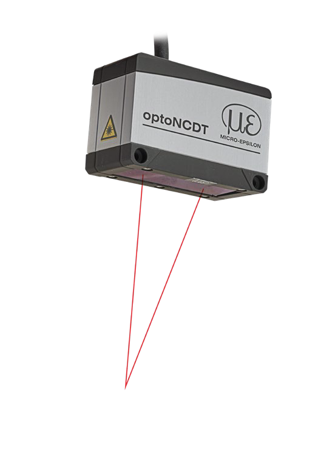
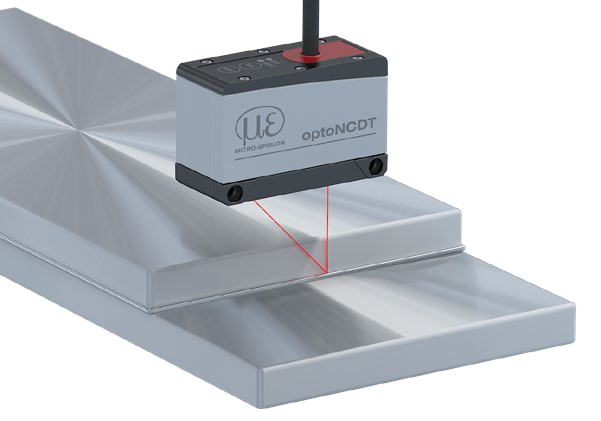

Er misst 4.000-mal pro Sekunde.
optoNCDT 1900 von Micro-Epsilon.
Und niemand versteht, was er sagt.
Unser Hackathon-Projekt macht seine Messwerte für jeden lesbar.
So spricht der Sensor: drei Bytes pro Messwert.
Die Anleitung dazu: 727 PDF-Dokumente.
Allein das Software-Handbuch: 1.825 Seiten.
Und der Treiber läuft nicht auf dem Mac.
00,000 mm
Kein Messwert
Hier sollte eine Zahl stehen.
Wir lesen die Bytes direkt am USB-Anschluss.
24,373mm
Wir haben dem Sensor das Sprechen beigebracht.
Ohne Herstellertreiber. Im Browser, auf jedem Laptop.
Dieselben Messwerte, wie sie im Kabel ankommen.
22,962mm vom Sensor entfernt
Diese Kurve ist echt.
Jede Stufe ist etwa 2 mm hoch.
Und jetzt mit dem echten Sensor.

1,4µm
Schwankung auf weißem Kunststoff, über 10 Sekunden.
Ein menschliches Haar ist etwa 70 µm dick.
Sechs Materialien. 479.628 Messwerte.
| Material | Abstand | Gemessen | 10 s |
|---|
99,88 % aller Messwerte lückenlos übertragen.
Die Bytes bleiben im Kabel.